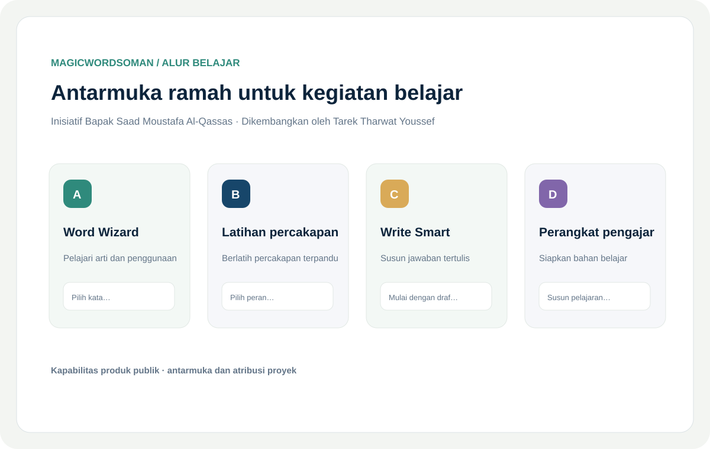

Tantangan
Siswa dan pengajar terbantu ketika perangkat latihan dan persiapan yang berguna mudah ditemukan dan digunakan.
Pengalaman belajar berbasis peramban yang menata aktivitas berbantuan AI menjadi alur yang mudah digunakan siswa dan pengajar.

Siswa dan pengajar terbantu ketika perangkat latihan dan persiapan yang berguna mudah ditemukan dan digunakan.
Mengembangkan pengalaman belajar Proyek MagicWordsOman dengan alur untuk kosakata, percakapan terpandu, menulis, dan sumber daya pengajar.
Menata beragam aktivitas dalam produk web yang sederhana dengan tetap berfokus pada proses belajar.
Inisiatif oleh Bapak Saad Moustafa Al-Qassas; dikembangkan oleh Tarek Tharwat Youssef. Kapabilitas produk publik dirangkum dalam panel visual.
Membuat aktivitas belajar berbantuan AI lebih mudah diakses melalui antarmuka peramban yang jelas.